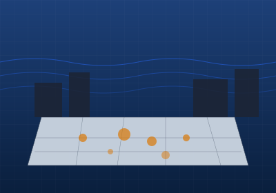
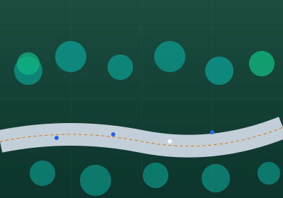
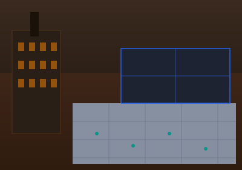
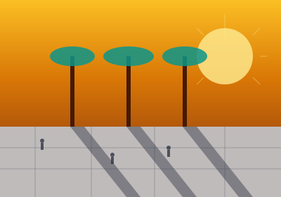
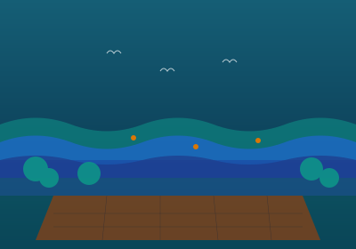
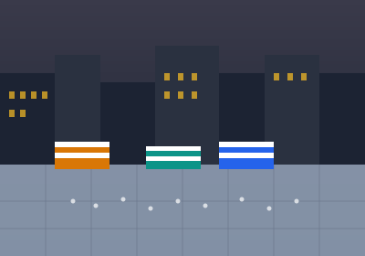

Meridian Plaza — Rotterdam
A 4,200 m² waterfront plaza redesigned using tidal flow data and pedestrian heat maps. Dwell time increased by 68% in the first year post-opening.
Each project begins with a dataset and ends with a place people choose to return to.

A 4,200 m² waterfront plaza redesigned using tidal flow data and pedestrian heat maps. Dwell time increased by 68% in the first year post-opening.

A 1.8 km greenway corridor informed by cyclist and pedestrian conflict analysis. Injury incidents reduced by 41% following redesign.

Adaptive reuse of a post-industrial site into a multi-use civic square, guided by community sentiment analysis across 3,400 survey respondents.

A shaded pedestrian boulevard designed using solar irradiance modeling to extend comfortable outdoor use by an average of 4.2 hours per day.

A coastal resilience park integrating storm surge modeling, biodiversity data, and social equity mapping to serve three adjacent underserved neighborhoods.

Revitalization of a declining commercial square using footfall analytics and vendor behavior studies, resulting in a 55% increase in market day attendance.
Average increase in public dwell time across completed plaza and park projects.
Cities across North America, Europe, Asia, and the Middle East.
Distinct civic typologies: plazas, parks, promenades, squares, corridors, and resilience landscapes.
Combined value of public infrastructure projects delivered to date.